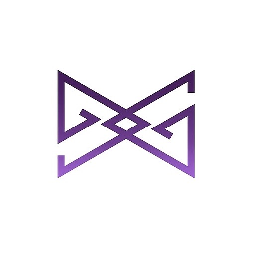
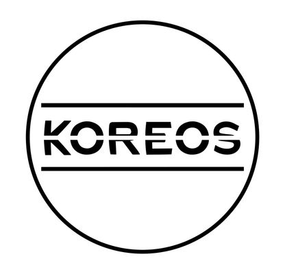

Beginner
12 hrs/week
Foundations
Foundations Choreography's mission is to create a safe space for beginning and intermediate dancers to grow, train, and challenge themselves. We offer training teams that create a performance set for our quarterly exhibition. In addition, we offer free weekly public workshops.

Beginner
15 hrs/week
KASA Dance Off
Kasa Dance Off is a freshman dance competition across universities in California. All level of dancers are welcomed to join. The competition will be held at the end of each fall quarter.

Intermediate
8 hrs/week
ModernX
ModernX, formerly known as CSSA Modern, is established by a group of Chinese students with a shared passion for modern dance. Our purpose is to provide a community for Chinese students to pursue their passion in modern dance. We explore, grow and challenge ourselves in the choreography of modern dancing.

Intermediate
8 hrs/week
KCN Modern
KCN Modern is a dance group that will perform at Korean Cultural Night every year. Dancers need to audition to get on the team and the dance style will be mainly hiphop.